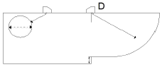
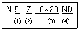

초음파비파괴검사기능사 (2011-02-13 기출문제)
1과목: 초음파탐상시험법
1. 시험면을 사이에 두고 한 쪽의 공간을 가압하거나 진공이 되게 하여 양쪽 공간에 압력차를 만들어 시험하는 비파괴 검사법은?
- 육안시험
- 누설시험
- 음향방출시험
- 중성자투과시험
(정답률: 87%)

2. 비파괴검사에 대한 설명으로 옳은 것은?
- 비파괴검사는 결함의 검출과 인장시험으로 대별된다.
- 경금속 재료의 표면결함 검출에는 침투탐상시험을 적용할 수 있다.
- 표면결함 검출에 적합한 비파괴검사는 방사선투과시험과 초음파탐상시험이다.
- 변형량을 구하는 스트레인 측정에는 화학적 원리를 이용한 스트레인게이지 등이 있다.
(정답률: 80%)
3. 다른 비파괴검사법과 비교하였을 때 침투탐상시험의 단점에 해당되는 것은?
- 비금속의 표면에 사용할 수 없다.
- 기공이 많은 재료에 사용할 수 없다.
- 크기가 큰 제품에는 사용할 수 없다.
- 원자번호가 큰 금속의 표면에는 사용할 수 없다.
(정답률: 77%)
4. 자화전류 제거 후 자장을 계속 유지하려는 자성 물질의 특성을 무엇이라 하는가?
- 탈자
- 포화성
- 보자성
- 잔류자기
(정답률: 80%)
5. 누설검사의 계기압에 대한 식으로 옳은 것은?
- 계기압 = 절대압력 + 대기압력
- 계기압 = 절대압력 - 대기압력
- 계기압 = 절대압력 × 대기압력
- 계기압 = 절대압력 ÷ 대기압력
(정답률: 49%)
6. 중성자투과시험에 대한 설명으로 옳은 것은?
- 중성자는 중금속에는 흡수가 크다.
- 중성자는 X선과 같이 직접적인 사진작용을 일으킨다.
- 중성자는 원자번호가 낮아 가벼운 물질일수록 흡수가 작다.
- 두꺼운 금속재 용기나 구조물의 내부에 있는 가벼운 수소화합물, 붕소 등의 존재를 알 수 있다.
(정답률: 78%)
7. 자분탐상시험에 대한 설명 중 틀린 것은?
- 표면균열 검사에 적합하다.
- 강자성체에는 적용할 수 없다.
- 시험체의 크기에는 크게 영향을 받지 않는다.
- 침투탐상시험만큼 엄격한 전처리가 요구되지는 않는다.
(정답률: 95%)
8. 초음파탐상시험에서 송신탐촉자와 접촉한 시험편 반대쪽면을 나타내는 탐상기 화면상에서의 지시는?
- 저면반사지
- 측면반사지시
- 결함반사지시
- 전면펄스지시
(정답률: 90%)
9. 방사선투과시험에 대한 설명으로 옳은 것은?
- 방사선투과 방향에 두께차가 있는 시험편인 경우 작은 결함도 비교적 검출이 쉽다.
- 블로홀이나 슬래그혼입 등의 결함은 방사선투과시험으로 검출하기는 매우 어렵다.
- 텅스텐혼입은 두께가 매우 얇은 결함이기 때문에 방사선투과시험으로는 검출이 불가능하다.
- 라미네이션은 두께가 매우 얇은 결함이므로 결함면의 입사방향에 관계없이 검출이 매우 쉽다.
(정답률: 62%)
10. 초음파탐상시험에 대한 설명 중 틀린 것은?
- 오스테나이트강에서는 종파에 비해 횡파의 경우 감쇠가 크다.
- 시험체의 결정입계에서 탄화물을 석출하면 산란감쇠가 증가한다.
- 오스테나이트강에서는 횡파는 때때로 주상정의 성장방향에 따라 진행한다.
- 스테인리스강 재질은 탄소강 재질과 초음파속도가 같으므로 대비시험편은 어느 것을 사용하여도 무방하다.
(정답률: 82%)
11. 전자기 원리를 이용한 비파괴검사법은?
- 와전류탐상시험
- 침투탐상시험
- 방사선탐사시험
- 초음파탐상시험
(정답률: 92%)
12. 결함의 정보를 파악하기 위한 비파괴검사법 중 비자성재료 표면에 존재하는 선형 결함의 깊이를 측정하는데 가장 효과적인 것은?
- 누설시험
- 침투탐상시험
- 와전류탐상시험
- 방사선투과시험
(정답률: 63%)
13. 형광침투탐상시험시 사용되는 자외선조사등의 파장(nm)으로 적합한 것은?
- 165
- 365
- 810
- 960
(정답률: 75%)
14. 시험체의 표면 및 표면직하 결함을 검출하기에 적합한 비파괴검사법만으로 나열된 것은?
- 방사선투과시험, 누설시험
- 초음파탐상시험, 침투탐상시험
- 자분탐상시험, 와전류탐상시험
- 중성자투과시험, 초음파탐상시험
(정답률: 98%)
15. 초음파 탐상기기에서 가장 중요한 3가지 성능은?
- 증폭 직선성, 감도, 거리진폭특성
- 증폭 직선성, 감도, 시간축 직선성
- 증폭 직선성, 분해능, 거리진폭특성
- 증폭 직선성, 분해능, 시간축 직선성
(정답률: 69%)
16. 황산리튬 진동자의 송·수신 효율 특성은?
- 송신효율이 가장 높다.
- 송신효율이 가장 낮다.
- 수신효율이 뛰어나다.
- 수신효율이 나쁘다.
(정답률: 74%)
17. 초음파탐상시험시 잡음(Noise)에코를 제거하는 일반적인 방법은?
- 게인 손잡이를 높여 준다.
- 펄스반복주파수를 ON 한다.(켠다.)
- 리젝트 손잡이를 ON 한다.(켠다.)
- 일정시간이 지나면 자연적으로 없어진다.
(정답률: 83%)
18. 초음파탐상시험에서 재질의 두께(t) 측정을 위한 기본 공진주파수(f)를 나타내는 식은? (단, 음파 속도는 V 이다.)
- V/2t
- Vㆍt
- V/3t
- t/V
(정답률: 66%)
19. 초음파 탐상기에서 작업자가 스크린에 나타난 물거리를 제거하기 위하여 조정하는 것은?
- 펄스길이
- 소인길이
- 소인지연
- 측정범위 조정
(정답률: 60%)
20. 주조품에 대한 초음파탐상시험에서 탐촉자의 주파수를 증가시키면 감쇠는 어떻게 되는가?
- 감소한다.
- 증가한다.
- 알 수 없다.
- 변하지 않는다.
(정답률: 48%)
2과목: 초음파탐상관련규격
21. 펄스폭 조정손잡이를 조절할 때 송신출력과 분해능의 변화는?
- 송신출력은 올라가고 분해능도 좋아진다.
- 송신출력은 내려가고 분해능도 떨어진다.
- 송신출력은 올라가고 분해능은 떨어진다.
- 송신출력과 분해능의 변화에는 관계없다.
(정답률: 62%)
22. 다음 중 강재내의 가장 미세한 결함을 탐지할 수 있는 주파수는?
- 0.5MHz
- 1MHz
- 2MHz
- 4MHz
(정답률: 52%)
23. A-주사 기본표시에서 가로(횡)축은 무엇을 나타내는가?
- 경과시간
- 에코의 높이
- 반사체의 크기
- 탐촉자를 움직인 거리
(정답률: 36%)
24. 초음파탐상시험시 결함의 평면을 파악하기 위한 표시방식으로 적절한 것은?
- A 스캔표시
- B 스캔표시
- C 스캔표시
- 디지털 표시
(정답률: 75%)
25. 굴절각 70° 로 STB-A1 에 교정하여 덧붙임 없는 강재용접부의 두께 20mm를 탐상했더니 빔 진행거리 90mm 지점에서 결함 에코가 나타났다. 표면으로부터 이 용접부의 결함깊이는 약 얼마인가?
- 9.2mm
- 11.2mm
- 13.2mm
- 15.2mm
(정답률: 42%)
26. 알루미늄의 맞대기용접부의 초음파경사각탐상 시험방법(KS B 0897)에 따른 탐상기의 사용 조건으로 옳은 것은?
- 증폭직선성은 ±5%로 한다.
- 시간축의 직선성은 ±3%로 한다.
- 감도 여유값은 40dB 이상으로 한다.
- 사용조건의 확인은 장치의 사용 후 및 2년마다 확인한다.
(정답률: 50%)
27. 강용접부의 초음파탐상 시험방법(KS B 0896)에 따라 경사각탐상으로 최대 에코높이를 나타내는 탐촉자 용접부 거리에서 흠의 지시길이 측정방법으로 옳은 것은?
- 좌우 주사하여 에코 높이가 L선을 넘는 탐촉자의 이동거리로 한다.
- 목회전 주사하여 에코 높이가 L선을 넘는 탐촉자의 이동거리로 한다.
- 좌우 주사하여 에코 높이가 M선을 넘는 탐촉자의 이동거리로 한다.
- 목회전 주사하여 에코 높이가 M선을 넘는 탐촉자의 이동거리로 한다.
(정답률: 55%)
28. 강용접부의 초음파탐상 시험방법(KS B 0896)에 따른 탐상기에 필요한 성능을 설명한 것으로 옳은 것은?
- 감도 여유값은 20dB 이상으로 한다.
- 증폭직선성은 ±5%의 범위 내로 한다.
- DAC 회로를 내장하는 탐상기의 DAC 회로는 30dB 이상 보상할 수 있는 것으로 한다.
- DAC 회로를 내장하는 탐상기의 경사값 조정은 4.8~48 dB/mm(횡파)의 범위에서 할 수 있는 것으로 한다.
(정답률: 53%)
29. 강용접부의 초음파탐상 시험방법(KS B 0896)에 따른 시험결과의 분류에서 맞대기 용접의 맞대는 모재의 판두께가 서로 다른 경우 판두께의 선정으로 옳은 것은?
- 얇은 쪽의 판두께로 한다.
- 두꺼운 쪽의 판두께로 한다.
- 얇은 쪽의 판두께에 2mm를 더한다.
- 서로의 판두께를 더하여 평균값으로 한다.
(정답률: 81%)
30. 알루미늄의 맞대기 용접부의 초음파경사각탐상 시험방법(KS B 0897)에 따른 1탐촉자법 평가레벨의 종류가 아닌 것은?
- A평가 레벨
- B평가 레벨
- C평가 레벨
- D평가 레벨
(정답률: 87%)
31. 초음파탐상시험용 표준시험편(KS B 0831)에 따른 A1형 및 A3형계 표준시험편의 검정 방법으로 옳은 것은?
- A1형의 입사점측정 위치는 R100면의 에코높이가 최대가 되도록 탐촉자를 진자 주사하고, 최대 에코의 위치에 탐촉자를 멈춘다.
- A3형계의 입사점측정 위치는 R30면의 에코높이가 최대가 되도록 탐촉자를 전후 주사하고, 최소 에코의 위치에 탐촉자를 멈춘다.
- A1형의 리젝션 에코높이는 R100면의 에코높이가 최소가 되도록 탐촉자를 진자 주사하고, 최대 에코의 위치에 탐촉자를 멈춘다.
- A3형계의 굴절각 눈금은 굴절각 70° 의 눈금에 대하여 굴절각 70° 탐촉자로 측정한다.
(정답률: 45%)
32. 금속재료의 펄스반사법에 따른 초음파탐상 시험방법 통칭(KS B 0817)에 따라 시험 결과를 평가하는 경우 고려할 항목과 거리가 먼 것은?
- 흠집의 에코 높이
- 등가 결함 지름
- 흠집의 지시 길이
- 표준시험편의 감도
(정답률: 61%)
33. 탄소강 및 저합금강 단강품의 초음파탐상 시험방법(KS D 0248)에 따른 시험 후 기록에 대한 사항을 크게 “①시험연 월일, 시험기술자에 관한 기록 ②단강품에 관한 기록 ③시험 조건에 관한 기록”으로 나눌 때 “단강품에 관한 기록”에 해당되지 않는 것은?
- 탐상 시기
- 주문 번호
- 대비시험편
- 탐상면의 거칠기
(정답률: 44%)
34. 초음파탐상 시험용 표준시험편(KS B 0831)의 STB-A1시험편의 그림에서 “D의 용도는?

- 감도 조정
- 종합적 확인
- 입사점 측정
- 굴절각 측정
(정답률: 65%)
35. 알루미늄 맞대기용접부의 초음파경사각탐상 시험방법(KS B 0897)에 규정된 시험편 중 대비시험편인 것은?
- STB-G
- STB-A2
- STB-N1
- RB-A4AL
(정답률: 75%)
36. 초음파탐촉자의 성능측정 방법(KS B ⑤35)에 따른 다음 표시의 2진동자형 수직탐촉자의 설명으로 틀린 것은?

- ①은 공칭주파수
- ②는 진동자의 재질
- ③은 진동자의 두께
- ④는 2진동자형 수직탐촉자를 표시하는 기호
(정답률: 44%)
37. 강용접부의 초음파탐상 시험방법(KS B 0896)에서 경사각탐촉자의 공칭굴절각과 STB 굴절각과의 차이는 상온(10~30℃)에서 몇 도 이내이어야 하는가? (단, 공칭굴절각의 값은 35°, 45°, 60°, 65° 또는 70°이다.)
- ±2°
- ±4°
- ±4.5°
- ±5°
(정답률: 67%)
38. 알루미늄의 맞대기용접부의 초음파경사각탐상 시험방법(KS B 0897)에 따른 경사각 탐촉자의 사용 조건 중 주파수에 대한 설명으로 옳은 것은?
- 시험주파수는 1MHz로 한다.
- 공칭주파수는 2MHz로 한다.
- 시험주파수는 3MHz로 한다.
- 공칭주파수는 5MHz로 한다.
(정답률: 74%)
39. 강용접부의 초음파탐상 시험방법(KS B 0896)에서 표준시험편 및 대비시험편의 적용시 곡률 반지름이 250mm 이상일 경우 원칙적으로 사용되는 시험편은?
- RB-A8
- RB-A7
- RB-4
- STB-A2
(정답률: 54%)
40. 초음파탐상 시험용 표준시험편(KS B 0831)에서 탐상거리 500mm 의 강단조품을 탐상할 때 반드시 준비해야 할 표준시험편은?
- STB-A1
- STB-A2
- STB-G
- STB-N1
(정답률: 59%)
3과목: 금속재료일반 및 용접일반
41. 컴퓨터 백신 프로그램의 기능으로 거리가 가장 먼 것은?
- 발견
- 예방
- 피해복구
- 백업
(정답률: 38%)
42. 통신망 부정행위 중 전송되는 패킷을 엿보면서 계정과 패스워드를 알아내는 행위를 일컫는 용어는?
- Wiretapping
- Sniffin g
- Worm
- Spoof
(정답률: 36%)
43. 검색어를 통해 색인화된 인터넷 자료를 찾는데 유용한 서비스를 제공하는 것은?
- Gopher
- WAIS
- Archie
- IRC
(정답률: 33%)
44. 컴퓨터에서 데이터를 항목별로 가로와 세로로 재구성하여 리포트 형태로 통계표를 작성하기 위해 사용되는 것은?
- 에디터
- 컴파일러
- 스프레드시트
- 워드 프로세서
(정답률: 23%)
45. PC에서 사용하는 직렬포트의 일종으로서 주변기기를 PC에 연결할 수 있는 플러그 앤 플레이 인터페이스는?
- 디지타이저
- 병렬 포트
- 플로터
- USB
(정답률: 41%)
46. 철 내의 탄소량(C)에 따른 강의 분류 중 옳은 것은?
- 순철은 0.8%C 이하이다.
- 아공석강은 0.8% ~ 2.0%C 까지의 범위이다.
- 공정주철은 4.3% ~ 6.67%C 까지의 범위이다.
- 주철이란 2.0% ~ 6.67%C 까지의 범위이다.
(정답률: 56%)
47. 다이아몬드 해머를 일정한 높이에서 시험편에 낙하시켰을 때 반발되는 높이를 이용하여 경도값을 결정하는 시험법은?
- 누프 경도 시험
- 브리넬 경도 시험
- 쇼어 경도 시험
- 비커스 경도 시험
(정답률: 55%)
48. 다음 중 Y합금의 합금 성분으로 옳은 것은?
- Al - Cu - Mg - Mn
- Al - Cu - Ni - W
- Al - Cu - Mg - Ni
- Al - Cu - Mg - Si
(정답률: 73%)
49. 탄성률이 좋아 스프링 등 고탄성을 요하는 재료로 사용 되는 것은?
- 인청동
- 망간청동
- 니켈청동
- 알루미늄청동
(정답률: 64%)
50. 소성변형이 진행되면 슬립에 대한 저항이 점차 증가한다. 이 저항이 증가하여 금속의 경도와 강도를 증가시키는 현상은?
- 가공 경화
- 시효 경화
- 전단 경화
- 쌍정 경화
(정답률: 77%)
51. 니켈 합금 중 콘스탄탄(Constantan) 합금이란?
- Ni-Cu 합금으로 60 ~ 70%Ni 합금이다.
- Ni-Cu 합금으로 40 ~ 50%Ni 합금이다.
- Ni-Fe 합금으로 60 ~ 70%Fe 합금이다.
- Ni-Fe 합금으로 40 ~ 50%Fe 합금이다.
(정답률: 60%)
52. 순철에서 철의 자기변태가 일어나는 변태점의 온도는?
- 210℃
- 723℃
- 768℃
- 910℃
(정답률: 62%)
53. 물(H2O)의 상태도에서 고상, 액상, 기상이 한점에 모이는 삼중점에서의 자유도는?
- 0
- 1
- 2
- 3
(정답률: 48%)
54. 금속이 일반적으로 갖는 특성을 설명한 것 중 옳은 것은?
- 금속 고유의 광택이 없다.
- 전기 및 열의 부도체이다.
- 전성 및 연성이 좋다.
- 수은을 제외하고는 고체 상태에서 비결정체이다.
(정답률: 59%)
55. 담금질(Quenching)하여 경화된 강에 적당한 인성을 부여하기 위한 열처리는?
- 뜨임(Tempering)
- 풀림(Annealing)
- 노멀라이징(Normalizing)
- 심랭처리(Sub-Zero Treatment)
(정답률: 75%)
56. Al-Si계 합금을 주조할 때, 금속 나트륨, 알칼리 염류 등을 첨가하여 조직을 미세화 시키기 위한 처리의 명칭으로 옳은 것은?
- 구상화 처리
- 용체화 처리
- 개량 처리
- 심랭 처리
(정답률: 70%)
57. 7-3 황동에 Sn을 1%첨가한 것으로 전연성이 좋아 관 또는 판으로 제작하여 증발기, 열교환기에 사용되는 것은?
- 톰백
- 문쯔메탈
- 네이벌 황동
- 애드미럴티 황동
(정답률: 75%)
58. 정격 2차 전류 200 A이고 정격 사용률이 40 %인 아크용접기로 150 A의 전류를 사용할 경우 허용사용률은 약 얼마인가?
- 71%
- 75%
- 81%
- 85%
(정답률: 64%)
59. 아크에어 가우징 작업에서 5~7kgf/cm2 정도의 압력을 가진 압축공기를 사용하는 것이 좋은데, 압축공기가 없을 경우 긴급 시는 무슨 가스를 대체하여 사용하는 것이 좋은가?
- 질소
- 프로판
- 아세틸렌
- 부탄
(정답률: 48%)
60. 가변압식 산소-아세틸렌가스 용접 토치에 250번 팁을 끼우고 표준불꽃으로 용접하였을 때, 시간당 아세틸렌가스의 소비량은 몇 L 인가?
- 125
- 250
- 375
- 500
(정답률: 57%)